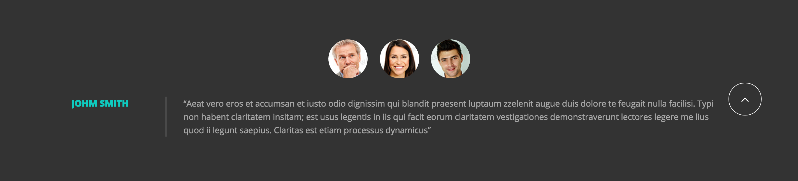
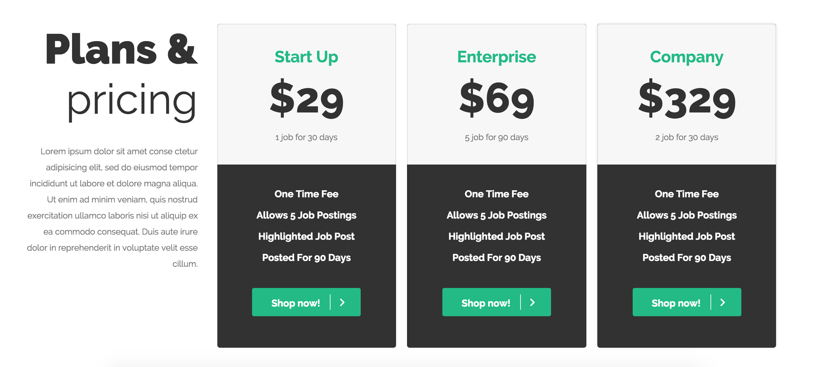
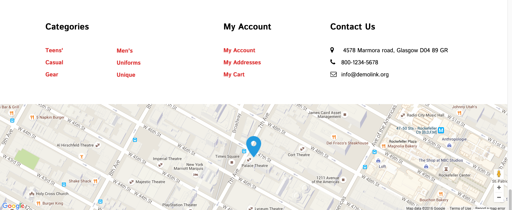

Component Library

Testimonial Timed Slider
What I hope to practice/learn?
When a website is offering any type of service at all, it is important for the new user to know what previous users have felt about the service. Testimonials have come to combat this very issue. In my opinion, having just static testimonials on the page does not really catch the scrolling users attention as much as the section can. And so we have a sliding testimonial bar. In this bar, one testimonial is shown for a few seconds and then the next testimonial appears and the whole process loops infinitely. Using this technique, the sliding testimonial bar gives life to the web page and adds interactivity to the user's experience. I want to practice the timing and animation features of jQuery.
How this relates to what I have/will learn in WDD.
In my WDD program, I have just recently spent time learning User Experience design. One of the things that we learned was that web development has it's roots in basic human tendencies. And we know humans tend to like what other humans like. This is why Testimonials work great in converting visitors into valuable customers. People want to know the experience of other existing users before making any decision, and that's where the sliding testimonial plays its role.
How might I build this?
- Create prev/next
<a> with href to navigate through your text content.
- Create a set of
<li> holding text content for the slider.
- Create the basic CSS rules for the slider.
- Use jQuery to enable sliders using a timer

Post Boxes with Zoomable Image on Hover
What I want to practice/learn?
Blogs of any sort have a lot of posts for viewers to read. I want to be able to feauture my top posts in the front page through consistent box shapes. I also want the feautured images in the box to zoom in slightly when I hover over them, to indicate what I am selecting.
How this relates to what I have/will learn in WDD.
This relates to the usage of consistency in web pages to show group elements. The user needs to know exactly where they are in a page and what their actions will do.
How might I build this?
- Create the .box class to style the individual box.
- Float the boxes within a set width div to stack them on the right of each box.
- Use the img:hover selector to change box image on hover
One Page Vertical Slider
What I want to practice/learn?
I want to have my home page have it's content seperated by different vertical slides. I also want the user to know where in the page they are. To do this I will be using the hyperlink attribute to link to different divs throughout my pages.
How this relates to what I have/will learn in WDD.
One-page navigations are more straightforward; there is no way to get lost and everything is just a couple of scrolls away. The page is more focused and clear, which makes it easier to communicate the main message of the website. Single-page websites work smoothly on almost all devices, since the navigation is mainly though scrolling or swiping instead of clicking or tapping. One of the best ways to keep your site keep easy is to have less links and page refreshes. Having a page's content seperated into full screen slider's can help in getting the information to the user in the fastest and convenient way possible. One-page navigation is more straightforward; there is no way to get lost and everything is just a couple of scrolls away.
How might I build this?
- Divide the homepage content using sections with ids
- Use the
<positon> tag to place a dotted page map on the left side
- Using the
<a> tag link the dots to the various sections.
- Use the javascript
<script> to add active classes to the dots if the user is on the appropriate div.
Sticky Header after Scroll
What I hope to practice/learn?
Sometimes users need to know where they are in webpage and how hey can navigate to another part at all times. To have this informtion readily available I want to learn how to make a sticky header. While making a sticky header can be easy, having it stick after the user scrolls is the difficult part. I want to use the jQuery selectors and events handlers to make this effect happen. SO that the scroll sticky header blends in with the original view.
How this relates to what I have/will learn in WDD.
A recent usability study suggests that fixed navigation bars can reduce browsing time by up to 22%.
How might I build this?
- Define a class for the nav bar when it is in the scrollable position
- Define a class for the nav bar when it is in the fixed position
- Use javascript to add the appropiate class to the navbar depending on it's position on the webpage.

Footer Map
What I want to practice/learn?
I want to be able to embed a google maps in the footer of webpage to show the locations of my services. I want to be able to use the google maps API to have a wide-width map.
How this relates to what I have/will learn in WDD.
In my last class we learned to use the google maps API and configure it to our needs. I want to use that knowledge to help me create a useful footer that enables further action from the user.
How might I build this?
- Create a
<div> element to hold the map at the bottom of the page. Use CSS to size the element
- Load the Google Maps API
- Set Map Properties using javascript in the
<script> tag